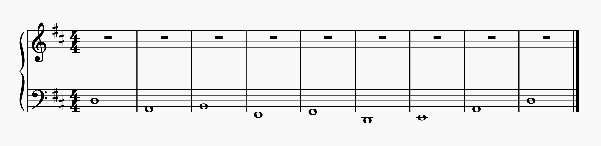

本页面为荆棘鸟声学分部社课第二次作业。
请于前将答案通过电子邮件发送至me@angine.tech，注明cn。
在以B为主音的自然大调音阶中，主音到二级音___（填音名）的音程为___，三级音到四级音的音程为___，主音到六级音的音程为___，五级音到主音的音程为___。
在自然小调音阶中，主音到三级音的音程为___，主音到七级音的音程为___；在和声小调音阶中，主音到三级音的音程为___，六级音到七级音的音程为___，七级音到主音的音程为___。
注：第一小题的答案已经给出；每道小题放两遍；本题并不包含增减音程。
开头将包含一个A4=440Hz的音以及一个A3与A4组成的八度音程，这部分不包括在需要记录的范围内，仅作为参考。
旋律部分为E♭大调，2/4拍，BPM=120。
注意是记低音伴奏声部
用DAW写作一段旋律，要求可以用人声演唱。提交midi文件。
1. Dorian, Phrygian, Lydian, Mixolydian的特征音分别是什么？与主音之间是何种音程关系？
2. 根据你的主观感受，用几个词或者一个句子分别描述七种中古调式的色彩。
学习视频中介绍的这种简化对位法，用第一类对位法为下面谱子中给出的低音声部写作一个高音声部。提交midi文件。
